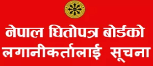

मुख्य
आर्थिक समृद्धिका लागि पर्यटन क्षेत्रको विकास...
मुलुकलाई आर्थिक समृद्धितिर लैजानका लागि पर्यटन क्षेत्रको विकास आवश्यक रहेकामा वक्ताले जोड दिएका छन् । जिपी कोइराला

देशकै सफल सिंचार्ई प्रणालीका रुपमा स्थापित कन्काई सिंचार्ई योजनाबाट लाभान्वित किसानहरुलाई सिंचार्ईले पर्याप्त पानी उपलब्ध गराएपछि अहिले धानबाली लगाउन सकृय रहेका जानकारी सिंचाई व्यवस्थापन कार्यलयका प्रमुख वीरेन्द्र यादवले दिएका छन् । मध्यान्ह राष्ट्रिय दैनिकलाई प्राप्त जानकारी अनुसार कन्काई सिंचार्ईले पर्याप्त पानी नहर प्रणालीको अन्त्य भू–भागसम्म पु¥याएकोले पूर्वाञ्चलको झापामा बर्षे धानबाली...

अख्तियार दुरुपयोग अनुसन्धान आयोगले नेपाल विद्युत् प्राधिकरण भक्तपुर शाखाका सुपरभाइजर भगवान सागर भैललाई घुस लिइरहेको अवस्थामा रङ्गे हात पक्राउ गरेको छ । आयोगको केन्द्रीय अनुसन्धान ब्युरोको टोलीले भैललाई रु ११ हजार घुस लिइरहेको अवस्थामा उनकै कार्यकक्षबाट सोमबार रङ्गेहात पक्राउ गरेको हो । एक ग्राहकसँग मिटरको क्षमता वृद्धि गर्न भैलले घुस...